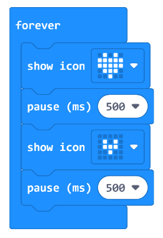

This is an easy and simple tutorial to get started on how to learn how to create a simple beating heart animation using the LEDs on your micro:bit
To get started you will want to get your micro:bit connected to your device and open the coding menu
Then you will want to place down these code blocks and this is all that is required to create the simple beating heart on the LEDs

How this works is that you will place down the forever block which will forever run the code inside of it repeatedly
And inside of this you will want to put a show icon block with the picture of the big heart drawn inside of it
After that you will want to put a pause block with whatever time you want to change the speed of the heartbeat
Then you will want to add in another show icon this time instead with the smaller heart picture inside of it which means that after the time put in the pause block it will swap to this heartbeat
After that you will just need to add in another pause block with the same time that you put in the other pause block to complete the circuit
Congratulations you are now done with your heart animation and are able to run the code and take a look at it.